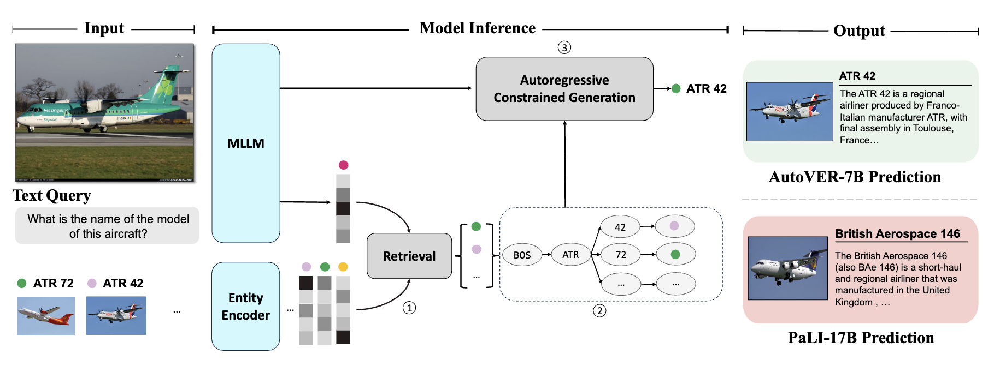
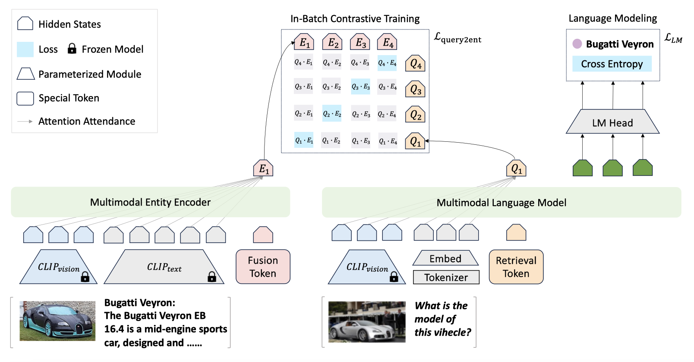
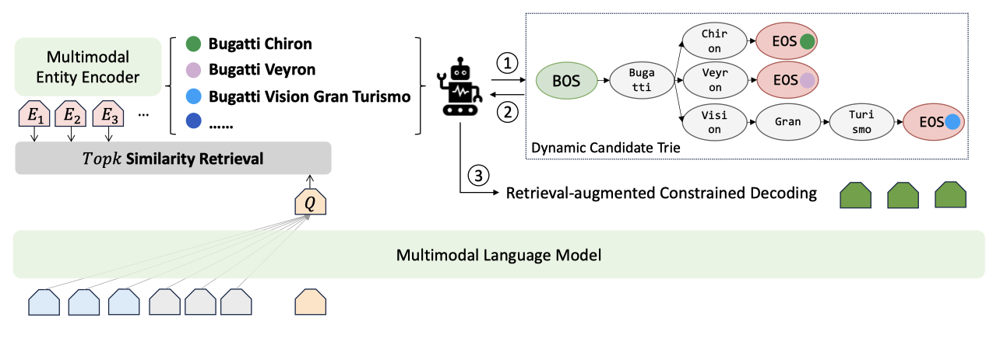
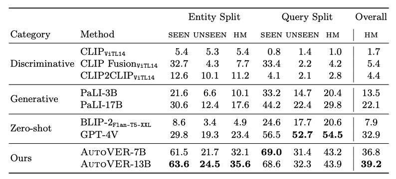
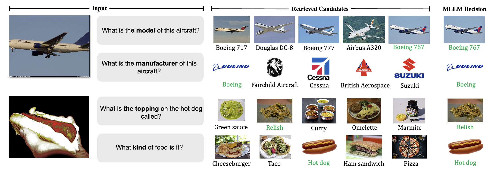

Visual Entity Recognition can be viewed as a multimodal knowledge grounding task, in which the model is required to process an image-text pair and predict an entity in Wikipedia. To circumvent trivial solutions for some query questions, all image-text pairs are annotated so the question cannot be correctly answered without the image.




@inproceedings{xiao2024grounding,
Author = {Zilin Xiao and Ming Gong and Paola Cascante-Bonilla and Xingyao Zhang and Jie Wu and Vicente Ordonez},
Title = {Grounding Language Models for Visual Entity Recognition},
Year = {2024},
Eprint = {arXiv:2402.18695},
}